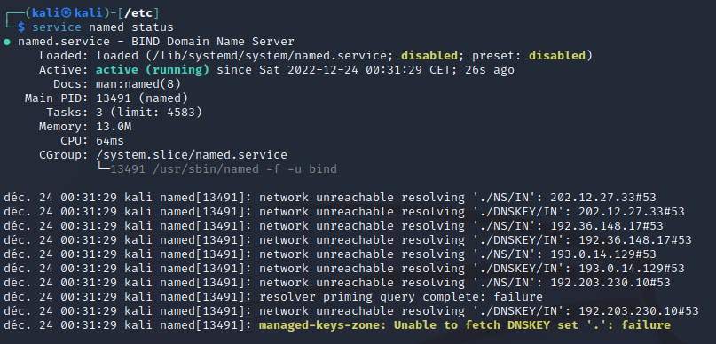
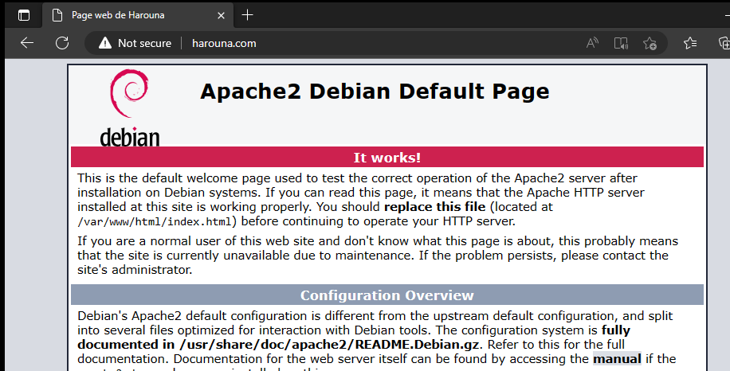

PROJET 2
Un système d'exploitation (SO) est un logiciel qui gère les ressources
informatiques d'un ordinateur et qui permet à d'autres logiciels
d'exécuter des tâches sur cet ordinateur. Il s'agit d'un programme
central et essentiel qui fait le lien entre le matériel de l'ordinateur
et les logiciels exécutés sur celui-ci.
Le système d'exploitation gère les différents composants de
l'ordinateur, tels que le processeur, la mémoire, les disques durs et
les périphériques d'entrée/sortie (clavier, souris, écran, etc.). Il
s'assure que chaque composant fonctionne de manière efficace et qu'il
est utilisé de manière optimale par les différents logiciels.
Le système d'exploitation offre également une interface utilisateur (UI)
qui permet aux utilisateurs de communiquer avec l'ordinateur et
d'exécuter différentes tâches. Cette interface peut prendre la forme
d'une ligne de commande ou d'une interface graphique, qui utilise des
fenêtres, des menus et des icônes pour afficher et accéder aux
différentes fonctionnalités du système.
Enfin, le système d'exploitation gère également les tâches de fond,
comme la gestion de la mémoire, la gestion des fichiers et le réseau, et
assure la sécurité et la stabilité du système en gérant les erreurs et
en protégeant le système contre les virus et les logiciels malveillants.
Il existe de nombreux systèmes d'exploitation différents, chacun ayant
ses propres caractéristiques et fonctionnalités. Les plus connus sont
Windows, macOS et Linux.
Objectifs
Le projet 2 à Guardia consistait en l'apprentissage des fondamentaux des
systèmes d'exploitation, comme indiqué précédemment. Et pour une
meilleure compréhension de ces derniers, nous avons dû installer un
serveur web Apache et un serveur DNS bind.


Un serveur web est un ordinateur qui héberge des sites Internet et les
rend accessibles aux utilisateurs sur Internet. Lorsqu'un utilisateur
tape l'adresse d'un site internet dans son navigateur, il envoie une
demande au serveur web correspondant, qui répond en envoyant le contenu
du site au navigateur de l'utilisateur.
Le DNS (Domain Name System) est un système qui permet de convertir les
noms de domaines en adresses IP. Lorsqu'un utilisateur tape l'adresse
d'un site internet dans son navigateur, le DNS traduit ce nom de domaine
en adresse IP, ce qui permet au navigateur de trouver et de se connecter
au serveur web correspondant.
En résumé, les serveurs web sont des ordinateurs qui stockent les
contenus des sites internet et les rendent accessibles aux utilisateurs,
tandis que le DNS est un système qui permet de trouver ces serveurs en
traduisant les noms de domaines en adresses IP.
Bind9 est un serveur DNS (Domain Name System) open source utilisé pour
traduire les noms de domaines en adresses IP. Cela permet aux
utilisateurs de se connecter aux serveurs web en utilisant des noms de
domaines au lieu d'adresses IP. Bind9 est connu pour être stable,
sécurisé et facile à configurer. Apache est un serveur web open source
très populaire. Il est utilisé pour héberger des sites web et rendre
leur contenu accessible aux utilisateurs sur Internet. Apache est connu
pour être flexible et extensible, et il prend en charge de nombreux
langages de programmation et bases de données. En outre, Apache est
facile à configurer et à administrer, ce qui en fait un choix populaire
pour les développeurs et les administrateurs de systèmes. En résumé,
Bind9 et Apache sont des outils essentiels pour les serveurs web et les
réseaux. Bind9 permet de traduire les noms de domaines en adresses IP,
tandis qu'Apache permet d'héberger des sites web et de rendre leur
contenu accessible aux utilisateurs.
Demonstration
1) Pour commencer, on va en ligne de commande afin de taper la commande
« Sudo apt update » afin de mettre à jour la liste les paquets.
De manière général, c’est une commande qu’il faut taper fréquemment pour
avoir tout le temps un system à jour.
À noter que la commande sudo nous permet d'effectuer des actions en tant
que super utilisateur. La commande apt ne fonctionne que si on ajoute un
sudo devant, ou alors directement avec un compte root, soit super user.
2) En suite, il faut bien évidemment installer apache. Pour cela, nous
allons utiliser la commande : Sudo apt Install apache2
3) Enfin, pour vérifier que tout fonctionne correctement, nous allons
lancer la commande "sudo systemctl status apache2". Si tout fonctionne
comme prévu, cette commande devra afficher le statut "active (running)"
et "loaded" pour Apache.
Nous pouvons ouvrir un navigateur web sur n'importe quel appareil du réseau
et entrer notre adresse IP ou "localhost" dans la barre de recherche. Si
tout est correct, nous devrons atterrir sur une page web Apache (modifiable
dans le dossier /var/www/...).
Comme vous pouvez le voir, la page se lance sans problème
Configuration du Serveur DNS
1) Pour commencer, on va installer bind9 le serveur DNS.
Sur l'image, vous pouvez voir que bind9 est déjà installer, l'étape
suivante est donc la configuration de ce dernier afin qu'il puissent
résoudre un nom de domaine.
2) Le premier fichier que l'on va venir modifier est le fichier
"named.conf.options"
Dans ce fichier, on va pouvoir mettre ce que l'on appelle un DNS
FORWARDER, c'est-à-dire que ça va être un DNS complémentaire qui va
résoudre les nom de domaine que le DNS principale ne peut pas résoudre.
Ici j'ai mis le serveur DNS de Google.
4) Le prochain fichier à modifier est le fichier : "named.conf.local".
C'est ici que l'on va configurer la zone, j'ai donné comme nom de
domaine, le nom "harouna.com"
Cela pourrait être n'importe quoi du moment qu'il y bien un
".quelquechose"
Ici, je vais crée le fichier "harouna.com" avec la commande touch :
Je modifie le fichier avec la commande nano :
Et je vais enfin pouvoir finaliser mon dns en associant l'ip de ma
machine debian (là ou il y a mon serveur web), et mon nom de domaine
"harouna.com" fraîchement crée :
Enfin, je vérifie que tout fonctionne avec la commande service named
status :

Configuration d'un Windows Serveur Client
1) Afin de tester mes serveurs WEB et DNS en temps réel, j'ai pris une
machine Windows cliente.
Sur l'image, vous pouvez voir les différents paramètres mis en place :
Changement de l'adresse ip pour correspondre au réseau
Changement du masque pour les mêmes raisons
Indication du serveur DNS soit l'ip de ma machine kali
2) Enfin, nous voyons qu'en tapant le nom de domaine : "Harouna.com"
dans la barre de recherche, on arrive bien sur notre page apache :
